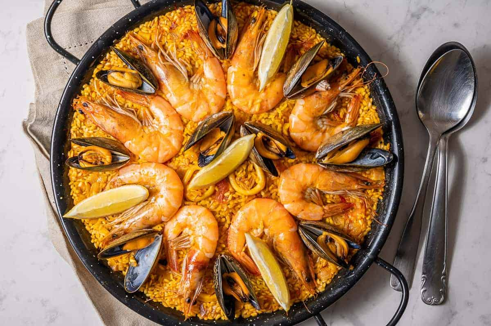

Falafel

Description
Paella is a rice dish originally from Valencia. While non-Spaniards
commonly view it as Spain's national dish,[citation needed] Spaniards
almost unanimously consider it to be a dish from the Valencian region.
Ingredients
- Onion
- Garlic
- Paprika
- Lemon
- Squid
- Shrimp and Mussels
- Tomato
- White Wine
- Rice
- Olive Oil
- Seafood Stock
- Saffron
Steps
- Heat Olive oil - Heat the olive oil in a large
frying pan or wok. Add the onion and soften for 5 mins.
- Add Ingredients - Add the smoked paprika,
thyme and paella rice, stir for 1 min, then splash in the sherry,
if using. Once evaporated, stir in the chopped tomatoes and chicken
stock.
- Season and Cook - Season and cook, uncovered,
for about 15 mins, stirring now and again until the rice is
almost tender and still surrounded with some liquid.
- Make patties or balls - Once the falafel mixture has
been plenty chilled, stir in baking powder and toasted sesame seeds,
then scoop golf ball-sized balls and form into balls or patties
- Stir seafood mix - Stir in the seafood mix and cover
with a lid. Simmer for 5 mins, or until the seafood is cooked through
and the rice is tender. Squeeze over the lemon juice, scatter over
the parsley and serve with the lemon wedges.